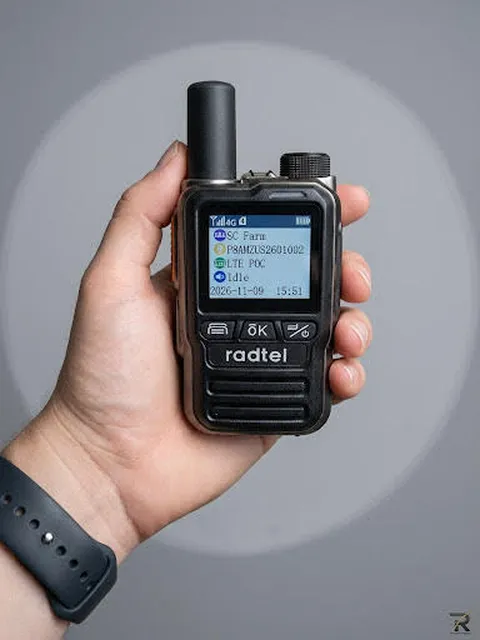
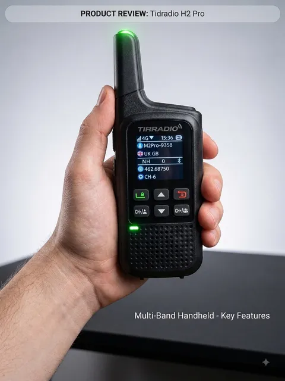

Updated November 2026 · Tested by Michael Smith, KM7FMJ
Two of the cheapest PoC radios worth buying, and we've used both. The short version: the Radtel P8 sounds better and feels better built; the TD-M2 Pro is the one to get if you ever need to talk with no cell signal.

From ~$99 per 2-pack, SIMs included for year one.
Check P8 price
About $50–80, PoC plus license-free FRS.
Check TD-M2 Pro price| Radtel P8 | TIDRADIO TD-M2 Pro | |
|---|---|---|
| Our score | 4.5 / 5 | 4.2 / 5 |
| Audio | Clear and loud | Clear |
| Build | Solid zinc alloy, premium for the price | Solid for the price |
| Screen | 1.77" display | Bright LED display, easy outdoors |
| PTT delay | 1–2 s (measured) | Not timed yet |
| No-signal backup | None: PoC only | FRS on a second PTT button |
| Setup | Ready out of the box; Radtel can pre-group orders | Odmaster app: QR pairing, buggy, groups hard to find |
| SIM | Included yr 1, ~$10 / SIM / yr after (or bring your own) | Included yr 1, 800 MB/mo, $9.99 / yr after |
| Battery | 3000 mAh, USB-C | Not in our test notes |
| Water rating | No IP rating published | Not in our test notes |
| Price | From ~$99 per 2-pack (~$50 each) | ~$50–80 |
| 3-yr cost, 4 radios | ~$280 | ~$340 |
The P8 was the clearer, louder radio on calls, and its zinc-alloy body feels a step above its price. The TD-M2 Pro is solid in hand and its audio is clear, but the P8 is the one we'd hand someone working in a noisy place.
Like every PoC-only radio, the P8 is useless without LTE signal. The TD-M2 Pro has a second PTT button that talks on license-free FRS, radio to radio, with no SIM, no network and no setup. Both modes stay live at the same time. For basements, rural dead zones, packed venues where the cell network jams, or a basic emergency backup, that button is the whole reason to buy it.
The P8 arrives ready to use, and Radtel can join separate orders into one group for you. The TD-M2 Pro activates through the Odmaster app: insert the SIM, press PTT1 for a QR code, scan it in the app. That's fine once, but in our testing the app was buggy and finding existing groups was harder than it should be. First-time PoC buyers will find the P8 less frustrating.
Both include year-one service and renew for about $10 per radio per year. Bought in 2-packs, the P8 works out to about $50 a radio, so four radios cost about $280 over three years against about $340 for the TD-M2 Pro. See the full subscription cost comparison.
Buy the Radtel P8 if your team is always in cell coverage: delivery drivers, event staff, family between towns. It sounds better, feels better and is easier to set up.
Buy the TIDRADIO TD-M2 Pro if you'll ever be somewhere without signal: jobsite basements, rural property, emergency kits. Accept the app headaches for the FRS button. Mixed teams can run both: P8s for most people, TD-M2 Pros for the core crew who need the backup.
In our hands-on testing the Radtel P8 scored higher (4.5 vs 4.2) thanks to clearer, louder audio and a more solid zinc-alloy build. The TIDRADIO TD-M2 Pro is the better choice if you need to talk with no cell signal, because its second PTT button uses license-free FRS radio-to-radio.
No. The Radtel P8 is a PoC-only radio and needs 4G LTE signal. The TIDRADIO TD-M2 Pro adds an FRS mode that works with no network over short range.
For 4 radios, the Radtel P8 is about $280 over three years (about $50 per radio from 2-pack pricing plus about $10 per SIM per year after year one). The TD-M2 Pro is about $340 (about $65 per radio plus $9.99 per year after year one).
Some links are affiliate links. Disclosure.